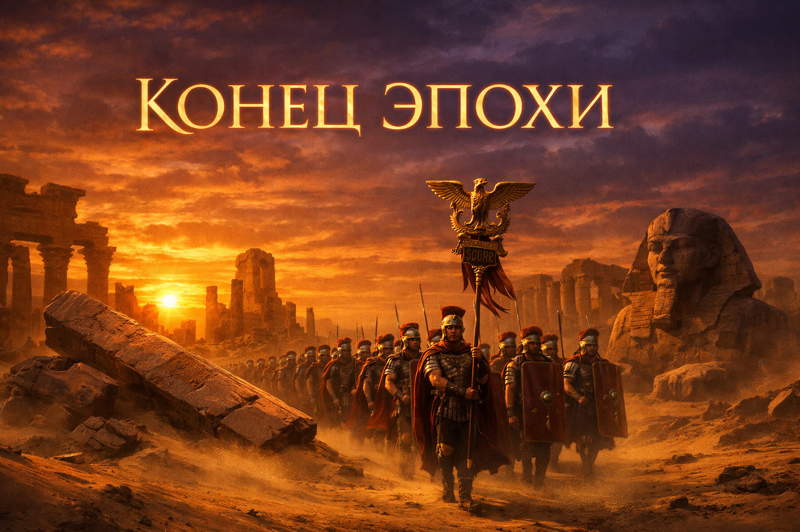

I
~12 000 — 3100 гг. до н.э.
Додинастический период
От зеленой Сахары до объединения Двух Земель под властью Нармера

🌍
Зеленая Сахара
12 000 лет назад Сахара была саванной с реками и мегафауной
~12 000 – 13 000 лет назад
Конец ледникового периода
После окончания ледникового периода (около 12–13 тысяч лет назад) климат в Северной Африке стал тёплым и влажным. Сахара представляла собой богатую саванну с мегафауной.
Люди вели образ жизни охотников-собирателей, приручили дикого быка (тура) и собирали дикорастущие злаки, не имея нужды в сложном земледелии. Нил в это время был бурным потоком без дельты, и жить на его берегах было опасно.
Влияние:
Создание благоприятной среды (богатая фауна и флора) для накопления первоначального человеческого капитала в Северной Африке без жёсткой привязки к реке.
5/10
~6000 г. до н.э.
Зарождение земледелия и астрономии
В районе Набта-Плая (сегодня абсолютно мёртвая пустыня) племена создали первые мегалитические комплексы, ориентированные на звезду Сириус.
Камни в этих комплексах были выстроены так, чтобы ориентироваться на звезду Сириус. Это свидетельствует о зарождении у племён интереса к наблюдению за звёздным небом, что впоследствии станет основой египетского календаря (где появление Сириуса предвещало разлив Нила) и сложной космологии.
Влияние:
Зарождение систематического наблюдения за звёздным небом — основа будущего египетского календаря и космологии.
★ 7/10

~5000 г. до н.э.
Культура Меримде
Из Месопотамии проникают передовые технологии: одомашнивание коз, овец, уток, выращивание ячменя. Зарождается традиция пивоварения.
Из-за таяния ледников уровень Средиземного моря поднялся, и воды начали подтапливать русло Нила — так образовалась заболоченная Дельта (Нижний Египет), где начал массово расти папирус. Культура Меримде стала одной из тех, кто перенял ближневосточные новшества. Представители этой культуры жили просто: хоронили мёртвых прямо в своих поселениях, практиковали тотемизм. Тогда же из проросшего ячменя египтяне изобрели пиво, став первыми массовыми пивоварами древности.
Влияние:
Переход от простого собирательства к производящему хозяйству и животноводству. Интеграция ближневосточных технологий заложила фундамент для демографического роста.
★ 8/10
~4000 – 3800 гг. до н.э.
Культура Бадари
Около 4500–4000 гг. до н.э. саванна стремительно превращалась в пустыню Сахару. Люди массово мигрировали в долину Нила.
Резкое увеличение плотности населения заставило их перейти к интенсивному земледелию из нужды. В это время в Верхнем Египте (где разливы Нила были более предсказуемыми) расцветает культура Бадари (ок. 4200 г. до н.э.), известная своей красивой двухцветной керамикой — терракотовой с обожжённым чёрным краем.
Влияние:
Экологическая катастрофа стала главным толчком к развитию египетской цивилизации. Люди навсегда привязались к Нилу, началось социальное расслоение и быстрое технологическое развитие.
⚡ 9/10
~3600 – 3500 гг. до н.э.
Амратская культура
Египтяне активно строят лодки, судоходство становится основой жизни. Невероятный уровень торговли: медь с Синая, кедр из Ливана, лазурит из Афганистана.
Амратская культура (ок. 3500 г. до н.э.) демонстрирует невероятный уровень торговли и тягу к роскоши: в Египет завозят медь с Синайского полуострова, кедр из Ливана, косметику и даже лазурит из Афганистана (через сложную цепочку посредников в Месопотамии). Также из Нубии начинают привозить золото и карликов, которых считали особой ценностью.
Влияние:
Лодочные флотилии стали инструментом войны и торговли. Выделилась элита (командиры лодочных ватаг), способная аккумулировать богатства из других регионов.
★ 8/10
~3500 – 3400 гг. до н.э.
Герзейская культура и система номов
Вдоль всего Нила — невероятная плотность поселений. Формируется система номов с культовыми центрами: Иераконполь, Тинис.
Герзейская культура — собирательное название для очень продвинутого этапа. Инновации распространялись по реке практически мгновенно. У нома был культовый и торговый центр (протогород), где хранились запасы и почитался местный бог-тотем. В отличие от Месопотамии, в Египте не было гиперурбанизации: крупнейшие центры вмещали лишь 5–10 тысяч человек.
Влияние:
Формирование административно-территориальной структуры номов, которая просуществует тысячи лет. Возникновение крупных культовых центров породило развитую мифологию (миф об Осирисе), что заложило основы мумификации и веры в загробную жизнь.
⚡ 10/10
Середина IV тыс. до н.э.
Эпоха первых вождей («Династии 00 и 0»)
Из номов выделяются правители, ассоциирующие себя с Хором: Хор-Скорпион, Хор-Боец, Хор-Хватала. Оформляется египетская письменность.
Начинаются постоянные войны между центрами (почитателями Хора из Иераконполя и почитателями Сета из других городов) за доминирование в Верхнем Египте. К 32-му веку до н.э. появляются «серехи» — штандарты с именами правителей.
Влияние:
Идеологическое обоснование власти: цари воспринимаются как воплощения бога, несущие космический порядок (Маат). Появляется рабовладение, классы общества (рэхи, хенемет) и сложные царские гробницы.
⚡ 9/10
~3100 г. до н.э.
👑 Объединение Египта. Царь Нармер
Нармер («Свирепый сом») объединяет Верхний и Нижний Египет. На Палетке Нармера он изображен в коронах обоих царств. Захвачено 120 000 пленных. Его сын Менес — основатель I династии по Манефону. Внук Хор Аха завершает покорение Нижнего Египта.

𓂭
II
~3000 — 2650 гг. до н.э. • I–II династии
Раннее царство
Первые династии, мастабы и человеческие жертвоприношения

I династия (8 царей)
Строительство мастаб и ритуальные жертвоприношения
Массовые человеческие жертвоприношения: в гробнице Джера — 318 тел. Со II династии практика навсегда прекращается. Появляются мастабы с «ложными дверями».
Идеология того времени предполагала, что люди, служившие царю при жизни, должны отправиться вместе с ним в загробный мир, чтобы сопровождать двойника фараона (Ка). Однако со II династии практика внезапно прекращается — вероятно, из-за осознания того, что убийство всего управленческого аппарата нерационально. К концу II династии появляются мастабы — кирпичные постройки с погребальной камерой под землёй. В мастабах устанавливали «ложные двери», которые никуда не вели в физическом мире, но создавали проход в мире духовном, чтобы Ка мог выходить к приносимой еде и путешествовать к северным звёздам.
Влияние:
Смерть практики жертвоприношений подтолкнула к замене людей магическими изображениями и статуэтками — стимул для развития искусства. Мастабы стали архитектурной основой для будущих пирамид.
★ 7/10
~2850 г. до н.э.
Первые экспедиции в Нубию
Первые зафиксированные экспедиции за первый порог Нила в Нубию за золотом и строительным гнейсом.
~2700-е гг. до н.э. • II династия
Кризис и гражданская война
Фараон Перибсен отвергает имя Хора и берет имя бога Сета — религиозный раскол. Фараон Хасехемуи подавляет восстания и восстанавливает порядок. Человеческие жертвоприношения полностью прекращаются.
𓂸
III
~2650 — 2150 гг. до н.э. • III–VI династии
Древнее (Старое) царство
Эпоха великих пирамид, от Джосера до Пепи II

~2650–2625 гг. до н.э.
Фараон Джосер и архитектор Имхотеп
Столица переносится в Мемфис. Визирь Имхотеп — первый в истории простолюдин, прославленный гениальностью — возводит первую Ступенчатую пирамиду.
С началом III династии фараон Джосер окончательно переносит столицу в Мемфис (на границу Верхнего и Нижнего Египта) для удобства логистики. При нём появляется должность визиря. Имхотеп решил поставить одну мастабу на другую, а затем ещё и ещё, построив в итоге первую Ступенчатую пирамиду в Саккаре.
Влияние:
Ступенчатая пирамида стала колоссальным прорывом в монументальном строительстве, потребовавшим создания новой государственной логистики. Имхотеп впоследствии был обожествлён.
⚡ 9/10

👑 Снофру
Основатель IV династии
Изменил систему налогов на основе ниломеров. Создал множество скотоводческих хозяйств. Ломаная пирамида начала обрушаться (угол с 54° до 43°). Рядом — идеальная Розовая пирамида. По объёму камня превзошёл всех.
👑 Хуфу (Хеопс)
Строитель Великой пирамиды
Возвёл Великую пирамиду Гизы — единственное сохранившееся чудо света. Строили свободные рабочие (~10–15 тыс. сезонников + 4 тыс. постоянных), которым платили мясом, пивом и хлебом. Обоснование — концепция Маат.
👑 Хафра (Хефрен)
Строитель Сфинкса
Вторая пирамида Гизы (кажется выше благодаря возвышенности) и Большой Сфинкс с лицом фараона. Культ Ра приобретает государственный статус, фараоны именуются сыновьями Ра.
👑 Джедефра
Реформатор культа
Солярный культ бога Ра становится государственным. Фараоны получают титул «Сын Ра».
Влияние эпохи:
Вершина централизации египетского государства: создание идеальной логистической машины и единственного сохранившегося чуда света. Сложение классического пантеона — фараон стал прямым потомком солнца.
⚡ 10/10
V династия (~25 в. до н.э.)
Тексты пирамид и децентрализация
Пирамиды мельчают, акцент на солнечные храмы. Номархи богатеют. Внутри пирамид впервые вырезают Тексты пирамид.
К V династии гигантские стройки прекращаются из-за истощения каменоломен и дороговизны. Государственная власть расползается: чиновники и номархи перестают хорониться рядом с фараоном и строят собственные роскошные гробницы. Внутри царских пирамид (например, Унаса) появляются заклинания и гимны — Тексты пирамид. В них встречаются поразительные сюжеты вроде «Каннибальского гимна», где фараон пожирает богов ради получения их магии. В эту эпоху достигает расцвета египетское каноническое изобразительное искусство.
Влияние:
Формирование классической египетской религии и заупокойных текстов. Начало децентрализации и потери фараоном абсолютного божественного статуса в пользу бюрократии.
★ 8/10
VI династия
Рекордное правление Пепи II — 94 года
Фараон Пепи II приходит к власти в 4 года и правит 94 года. Олигархия разрастается.
★ 7/10
~2200 г. до н.э.
⚠ Климатическая катастрофа — «Событие 4200 лет назад»
Жесточайшая засуха, Нил не разливается 7 лет. Номархи закрывают амбары. Египет погружается в хаос.
Конец Древнему царству положил климатический сдвиг в XXII веке до н.э. — «событие 4200 лет назад». Произошло глобальное совпадение климатических циклов, вызвавшее катастрофическую засуху. В ответ на голод местные номархи отказались подчиняться мемфисскому центру: вместо раздачи государственного зерна народу, они заперли амбары и стали кормить лишь свои личные вооружённые дружины.
Влияние:
Единое государство рухнуло, логистика и транспортные связи исчезли, началось массовое разграбление некрополей и пирамид. Столица Мемфис была заброшена навсегда, Египет погрузился в эпоху хаоса (Первый переходный период).
⚡ 10/10

𓇋
IV
~2040 — 1650 гг. до н.э. • XI–XIII династии
Среднее царство
Возрождение из хаоса, золотой век XII династии и вторжение гиксосов

~1990 г. до н.э.
Ментухотеп объединяет Египет
Фиванский правитель Ментухотеп объединяет страну, разбив Гераклеополь. Создает личную гвардию из высоких воинов — около 60 из них похоронены вместе с ним.
Аменемхет I и основание XII династии
Бывший визирь Аменемхет I совершил переворот и основал великую XII династию. Убит заговорщиками из гарема.
Аменемхет изначально был высокопоставленным чиновником (визирем), руководившим добычей камня. Он возобновил строительство пирамид, однако ради экономии их строили из мусора и щебня, облицовывая камнем, варварски выломанным из пирамид Древнего царства. Он начал нанимать нубийцев в качестве лучников, предварительно сжигая их родные деревни. В конце жизни был убит заговорщиками, после чего появилось знаменитое «Поучение Аменемхета» — литературный памятник, пропитанный депрессией и недоверием.
Влияние:
Заложил основы самой могущественной династии Среднего царства. Оставил литературный памятник, по которому египтяне учились писать столетиями. Ввёл институт соправительства для мирной передачи власти.
★ 8/10
Сенусерт III — абсолютная бюрократия
Сломил власть номархов, заставив их жить при дворе. Создал государственный культ слежки — статуи с оттопыренными ушами по всей стране.
Этот фараон отличался крайней жёсткостью и авторитарностью. Он окончательно сломил власть независимых правителей номов, запретив им жить в своих провинциях: отныне они обязаны находиться при дворе фараона. Сенусерт III создал государственный культ слежки: считалось, что фараон «видит сердца людей» (читает мысли). Он лично водил жесточайшие походы в Куш (Нубию), где травил колодцы, сжигал посевы и угонял скот.
Влияние:
Наивысший пик централизации Среднего царства. Создание мощнейшего репрессивного аппарата и сети осведомителей.
⚡ 9/10
Торговая империя и крепости XII династии
Колоссальные форты (Бухен), импорт бронзы с Крита, кедра из Библа. Мегаполис Аварис — 100 тысяч жителей.
При XII династии Египет стал невероятно богатым: активно добывалось золото, серебро и драгоценные камни. Строились колоссальные военные форты (например, Бухен на первом пороге Нила) с гарнизонами до 500 человек. Египет наладил импорт бронзы с Крита (минойская цивилизация) и ливанского кедра из финикийского Библа. В дельте Нила вырос гигантский мультикультурный мегаполис Аварис с населением под 100 тысяч человек, куда массово свозили семитских рабов и переселенцев.
Влияние:
Интеграция Египта в международную экономику. Взаимодействие египетских иероглифов и семитских языков привело к созданию протосинайской письменности — прародителя всех современных алфавитов.
⚡ 9/10
Нефрусебек — первая женщина-фараон
Нефрусебек («Красивый крокодил») — первая женщина, ставшая полноценным фараоном. Конец великой XII династии.
Когда у наследников не осталось мужчин, на престол взошла Нефрусебек — в египетском языке даже не было женского аналога слова «фараон». На ней великая XII династия оборвалась, и страна скатилась в период нестабильности (XIII династия), когда правители стали компромиссными марионетками.
Влияние:
Создание прецедента женского правления. Окончание золотого века Среднего царства.
5/10
~1650 г. до н.э.
⚔ Вторжение гиксосов
Гиксосы с лошадьми, колесницами и бронзовым оружием разбивают египтян, воевавших дубинами верхом на ослах.
Упадок центральной власти привёл к катастрофе в XVII веке до н.э. Семитские переселенцы в Аварисе объявили независимость, а вскоре в страну вторглись гиксосы (от «хекау хасут» — правители чужих земель). Они обладали колоссальным технологическим преимуществом: боевые колесницы, композитные луки, бронзовая броня и мечи-хопеши. Гиксосы захватили Нижний Египет, оставив за коренными жителями лишь территорию вокруг Фив.
Влияние:
Конец Среднего царства. Гиксосы не разрушили культуру, а ассимилировались. Египтяне переняли у них колесницы и бронзовое оружие, перестроили армию — что позволило позже построить великую империю Нового царства.
⚡ 10/10
👑 Аменемхет I
Бывший визирь, основатель XII дин.
Возобновил строительство пирамид (экономно — каркас из мусора). Крепость Бухен на 1-м пороге. Нубийские наемники. Убит в гаремном заговоре.
👑 Сенусерт III
Пик могущества Среднего царства
Жесткая централизация: номархи обязаны жить при дворе. Статуи с оттопыренными ушами («все слышит»). Тактика выжженной земли в Куше. Египетский Лабиринт и Меридово море.
👑 Нефрусебек
«Красивый крокодил»
Первая полноценная женщина-фараон Египта. Правление неудачное и недолгое — конец великой XII династии.
Технологический шок
Гиксосы («хекау хасут») приносят боевые колесницы, лошадей, композитные луки, бронзовое литье и оружие хопеш. Город Аварис в Дельте — их столица (до 100 тыс. населения).
Египет в тисках
Гиксосы с севера, кушиты с юга. Египет сжимается до района Фив. XVI–XVII династии — марионетки. Второй переходный период.
𓀀
V
~1550 — 1070 гг. до н.э. • XVIII–XX династии
Новое царство
Величайшая эпоха Египта: от изгнания гиксосов до катастрофы бронзового века

☄
Эпоха великих фараонов
Хатшепсут • Тутмос III • Эхнатон • Тутанхамон • Рамзес II
~1560-е гг. до н.э.
Извержение Санторини
Климатические бедствия отражены как «казни египетские». Фиванская династия использует это идеологически против гиксосов.
~1540–1530-е гг. до н.э.
Яхмос I — основание XVIII династии
Яхмос I берет Мемфис и столицу гиксосов Аварис, преследует их в Азию (3-летняя осада Шарухена). Покоряет Нубию до 4-го порога. Подробности — из гробницы морского пехотинца Яхмоса, сына Эбаны.
Правление Тутмоса I
Рождение империи
Тутмос III — 16 походов за 20 лет. В битве при Мегиддо разгромил коалицию за полчаса. Границы до Евфрата.
После смерти Хатшепсут Тутмос III начал агрессивную экспансию. В битве при Мегиддо столкнулся с огромной коалицией ханаанских городов и хеттов. Благодаря тяжёлой пехоте с хопешами и колесницам, египтяне обратили врага в бегство за полчаса, после чего взяли город в длительную осаду. За 20 лет он расширил границы до реки Евфрат на севере и до 4-го порога Нила на юге.
Влияние:
Превращение Египта в мировую империю и абсолютного гегемона Ближнего Востока. В страну хлынули потоки рабов, дани и технологий. Началась дипломатическая переписка с Вавилоном, Ассирией и Микенами.
⚡ 10/10
7-й год правления Тутмоса III
Хатшепсут берет регалии фараона
Надела мужские регалии (включая накладную бороду). При ней появилось слово «фараон». Храм Джесер-Джесеру, 30-метровые обелиски.
Изначально Хатшепсут была регентом при малолетнем пасынке Тутмосе III, но вскоре сама взошла на престол. Термин «фараон» происходит от египетского «пер-аа» — великий дом/дворец. Она опиралась на жречество бога Амона, щедро одаривая храмы тоннами золота. Зодчий Сененмут построил заупокойный храм Джесер-Джесеру в Дейр-эль-Бахри и 30-метровые гранитные обелиски.
Влияние:
Эпоха небывалого архитектурного и экономического расцвета. Окончательно оформился статус фараона как живого воплощения бога. Утверждение Праздника Опет как главного государственного торжества.
★ 8/10

Экспедиция в Пунт
Путешествие в Сомали
Привозят мирровые деревья, экзотических животных. Дипломатический контакт с местной принцессой.
Аменхотеп III — Золотой век
37 лет без войн. Соседние цари умоляли прислать золото, «которого в Египте как песка». Храмы Луксора, Карнака, Колоссы Мемнона.
Его 37-летнее правление — вершина богатства Нового царства. Фараон собирал огромный гарем из иностранных принцесс. Развернулась «гонка великолепия» — строительство грандиозных храмов в Луксоре и Карнаке, а также знаменитых Колоссов Мемнона («поющих» статуй высотой с многоэтажный дом).
Влияние:
Смещение акцента с войн на имперское доминирование через архитектуру. Начало слияния всех богов с солярным культом — фараон начал называть себя «сияющим диском», что подготовило почву для религиозной революции Эхнатона.
★ 8/10
⚔ Тутмос III
16 походов за 20 лет
Битва при Мегиддо — разгром коалиции Митанни и Кадеша. Дань с Вавилона (лазурит), хеттов (серебро), железные ножи от микенских греков. «Ботанический сад» и охота на 120 слонов.
☀ Аменхотеп III
~1390–1353 гг. • 37 лет мира
Колоссы Мемнона, Луксорский храм. Гарем: Гилухепа из Митанни, 317 дочерей Вавилона. Переписка с царем Тушраттой. Мумифицированная любимая кошка в отдельном саркофаге.
Религиозная революция по годам
3–4 год: Ра-Хорахте сливается с Атоном.
5 год: Имена Амона и Ра удалены, остается только Атон.
6 год: Новая столица — Ахетатон («Горизонт Атона»).
7 год: Смена имени на Эхнатон («Полезный Атону»).
9 год: Тотальное уничтожение надписей старых богов.
12 год: Запрещено слово «боги» во множественном числе.
5 год: Имена Амона и Ра удалены, остается только Атон.
6 год: Новая столица — Ахетатон («Горизонт Атона»).
7 год: Смена имени на Эхнатон («Полезный Атону»).
9 год: Тотальное уничтожение надписей старых богов.
12 год: Запрещено слово «боги» во множественном числе.
Амарнское искусство
Вытянутые пропорции, любовная лирика, семейные сцены. Бюст Нефертити из мастерской скульптора Тутмоса-младшего. Египет теряет земли в Сирии из-за игнорирования внешней политики.
~1332–1323 гг. до н.э.
Тутанхамон — мальчик-царь
Взошёл на престол в 8 лет. Свернул реформы Эхнатона, вернул культ Амона. Умер в 18 лет.
Влияние:
В историческом контексте — незначительный правитель. Однако его гробница в Долине царей стала единственной неразграбленной. Найденные золотые сокровища и посмертная маска стали главным символом богатства Египта.
★ 7/10

Конец XVIII династии
Генерал Хоремхеб
Захватывает власть, уничтожает имена Эхнатона и Тутанхамона. Передает трон военному — Рамзесу I.
Правление Сети I
Подготовка к величию
Храм в Абидосе, официальный список фараонов (вычеркнуты гиксосы, Хатшепсут, амарнские еретики). Начинает возвращать Азию.
Май 1274 г. до н.э.
Битва при Кадеше
20 000 египтян и 2 500 колесниц против хеттов с железным оружием. Битва вничью. Первый в истории мирный договор.
Рамзес II сошёлся с хеттами царя Муваталли II в крупнейшей колесничной битве древности. Лошади Рамзеса звались «Фиванская победа» и «Богиня Мут довольна». Сражение закончилось вничью, после чего был подписан первый задокументированный мирный договор с хеттом Хаттусили III. Рамзес II правил около 66 лет и застроил Египет колоссальными монументами, самый известный — скальный храм Абу-Симбел.
Влияние:
Эпоха наивысшего монументального строительства и дипломатии.
⚡ 9/10

Великие стройки
Абу-Симбел, Рамессеум, Пер-Рамзес
Храмы Абу-Симбел, Рамессеум (архитектор гипостильного зала — Минхеперрасенеб) и новая интернациональная столица в Дельте — Пер-Рамзес.

~1213–1201 гг. до н.э.
Мернептах и первая волна
Ливийцы с наёмниками — народами моря. На стеле — единственное упоминание Израиля в египетских источниках.
Ливийцы под предводительством Деда и Мери с наёмниками — народами моря (ахейцы, этруски, ликийцы, сардинцы, сицилийцы). На стеле Мернептаха сына Рамзеса II — единственное упоминание Израиля: «Израиль опустошён, нет семени его».
Влияние:
Первые признаки грядущей глобальной катастрофы. Важнейший библейский археологический памятник.
★ 8/10
~1200–1187 гг. до н.э.
15 лет гражданской войны
Хаос: Сети II, Аменмес, Саптах, Таусерт сменяют друг друга. Генерал Сетнахт основывает XX династию.
1179 г. до н.э.
Рамзес III останавливает народы моря
Весь цивилизованный мир рушится. Рамзес III объявил тотальную мобилизацию. «Битва на воде» — египтяне расстреляли баржи из луков.
К началу XII века до н.э. пали хетты, Микены, сирийские города. Рамзес III — последний великий фараон Нового царства. Решающее сражение произошло на воде: флотилии переселенцев попытались войти в Нил, а египтяне расстреляли неповоротливые транспортные баржи со своих маневренных кораблей.
Влияние:
Египет — единственная держава региона, физически пережившая Катастрофу Бронзового века.
⚡ 10/10

1159 г. до н.э.
Первая в истории забастовка рабочих
Строители Долины Царей отказались работать — два месяца без пайков. Рамзес III убит в гаремном заговоре.
В 1159 году до н.э. строители составили петицию к визирю и фараону, жалуясь на коррупцию жрецов. Позже одна из жён Рамзеса III организовала заговор, подкупила охрану и жрецов, использовавших чёрную магию. Фараону перерезали горло (подтверждено исследованием мумии).
Влияние:
Первый документально зафиксированный страйк в истории. Убийство правителя стало началом необратимого распада страны.
★ 8/10
1091 г. до н.э.
Конец Нового царства
Рамзесы IV–XI сменяют друг друга. Потеря доступа к бронзе, серебру и кедру. Разграбление гробниц. Раскол на два царства.
Из-за обрушения международной торговли Египет лишился импорта. Чудовищная коррупция и инфляция, массовое разграбление царских гробниц (включая рамессеум Рамзеса II). На севере в Дельте правил военачальник Смендес, а на юге в Фивах — верховный жрец Амона Херихор, который тоже объявил себя фараоном.
Влияние:
Конец египетской империи и переход к эпохе раздробленности.
⚡ 9/10
𓁠
VI
XI — VIII вв. до н.э. • XXI–XXIV династии
Третий переходный период
Распад государства, ливийские фараоны и утрата влияния

XXI династия
Столица в Танисе
Храмы Пер-Рамзеса разбирают на стройматериалы. Фараон Псусеннес I хоронит себя в саркофаге Мернептаха. Жрец Пинеджем прячет царские мумии в тайниках.
X в. до н.э.
Путешествие жреца Уну-Амона
Жрец отправлен в Библ (Ливан) за кедром. Ограблен в городе Дор, правитель Библа отказывается давать дерево без предоплаты. Полная утрата международного авторитета.
~925 г. до н.э.
Шешонк I (Сусаким) — XXII ливийская династия
Вождь ливийцев мешвеш стал фараоном. Поход в Иудею, разграбление Иерусалимского храма. В Библии — царь Сусаким.
Поселившиеся в Дельте ливийцы сильно египтизировались: почитали Амона, перенимали культуру. Шешонк I (основатель XXII династии) временно объединил страну, посадив дочь жрицей Амона в Фивах. Свою столицу — город Танис — ливийцы построили буквально из кусков старой столицы Пер-Рамзес, перетащив оттуда чужие статуи и обелиски.
Влияние:
Демонстрация того, как египетская культура поглощала завоевателей, заставляя их служить своим богам.
★ 7/10
𓀜
VII
VIII — IV вв. до н.э. • XXV–XXXI династии
Позднее царство
Кушиты, ассирийцы, персы — Египет под иностранной властью

~750 г. до н.э.
Кушитский царь Кашта
Принимает титул «правитель Верхнего и Нижнего Египта». Его преемник Пианхи (Пи) вторгается, чтобы «восстановить маат». Кушиты строят пирамиды в Напате, пишут на классическом среднеегипетском.
Правление Шабаки и Тахарки
Нубийское возрождение
Нубийский царь Пианхи захватил Египет, чтобы «восстановить Маат». Кушиты запустили ренессанс и возобновили строительство пирамид.
Из Нубии (Куша), которая сохранила египетскую администрацию и культуру лучше самой метрополии, началось вторжение. Пианхи считал современных египтян погрязшими в грехах (особенно его злило плохое обращение с лошадьми). Кушиты (Шабака, Тахарка) массово копировали древние тексты (например, «Памятник мемфисской теологии») и возобновили строительство пирамид по образцам Древнего царства.
Влияние:
Уникальный пример культурного возрождения страны силами её бывшей колонии.
★ 8/10
VII в. до н.э.
Ассирийское вторжение
Неоассирийская империя вторгается. Разбиты кушиты, разграблены Фивы. Сын Тахарки захвачен в цепях.
Влияние:
Первое в истории покорение Египта мировой железной империей.
⚡ 9/10
664 г. до н.э.
Псамметих I — XXVI (Саисская) династия
С помощью греческих и карийских наёмников объединил Египет. Небывалый экономический бум.
Влияние:
Последний независимый расцвет собственно египетской цивилизации.
★ 8/10
Правление Нехо II
Канал, флот и кругосветка
Нехо II создал первый военный флот, начал строить Суэцкий канал и поручил финикийцам обогнуть Африку.
525 г. до н.э.
Персидское завоевание
Персидский царь Камбис завоевал Египет, превратив его в сатрапию Ахеменидов. Нектанеб II — последний коренной фараон.
Персидские цари формально объявлялись фараонами, но правили из далёких Суз. Египетские мастера и врачи массово вывозились в Персию, оказывая колоссальное влияние на персидское искусство. Позже египтянам удалось сбросить власть персов на 60 лет, но персы вернулись.
Влияние:
Окончательная утрата Египтом статуса независимого игрока на мировой арене.
⚡ 9/10
𓅱
VIII
332 — 30 гг. до н.э.
Эллинистический Египет
Александр Македонский, Птолемеи и Клеопатра — финал великой цивилизации

332 г. до н.э.
Александр Македонский покоряет Египет
Без боя входит в Египет, встречен как освободитель от персов. Оракул в оазисе Сива объявляет его сыном бога Амона. Основывает Александрию.

323 г. до н.э.
Начало эпохи Птолемеев
Греческая династия Птолемеев: синтез египетской и эллинской культур. Но Птолемеи не говорили по-египетски.
★ 7/10
30 г. до н.э.
Клеопатра VII — конец Древнего Египта
Последняя царица. После её гибели в 30 г. до н.э. Египет стал провинцией Римской империи.
Влияние:
Трансформация Египта в эллинистический и затем римский центр, сохранивший лишь тень былой религии.
★ 8/10

